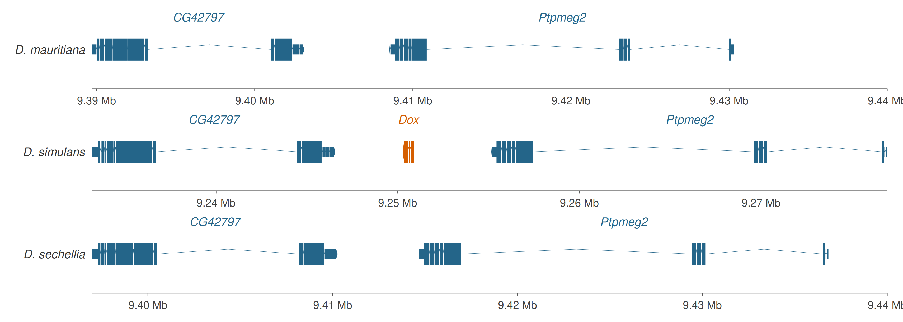
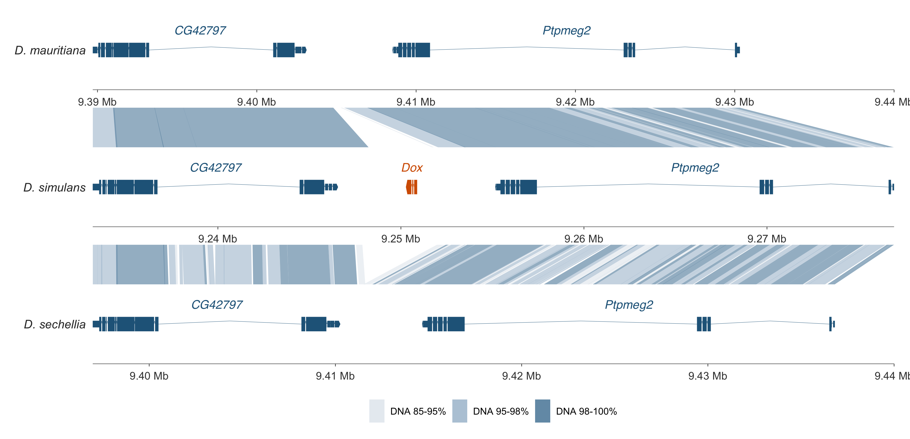
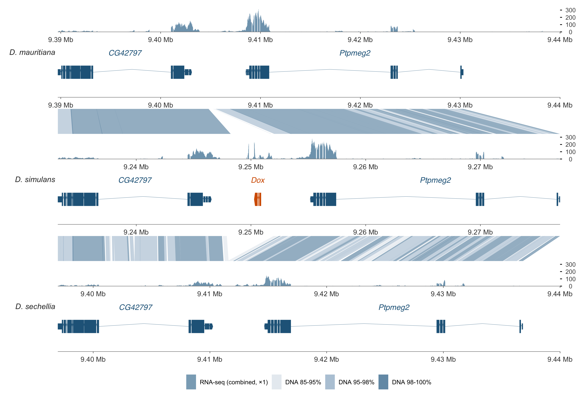
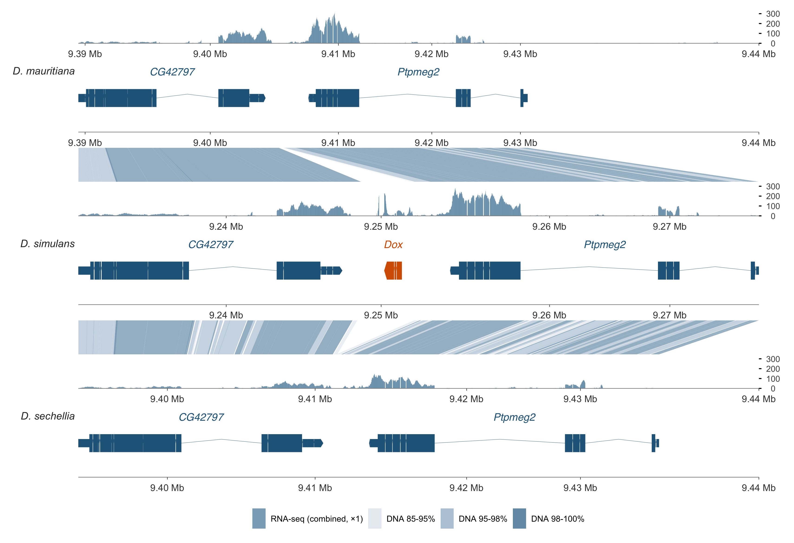

3. Visualizing local synteny across species
Source:vignettes/dox-synteny-demo.Rmd
dox-synteny-demo.RmdCompare gene structure, alignment, and RNA-seq
Compare the Dox locus in Drosophila mauritiana, D.
simulans, and D. sechellia. Each window contains the
flanking genes CG42797 and Ptpmeg2; D.
simulans also contains a Dox coding model. The locus
comes from Extended
Data Figure 5 of Vedanayagam et al. (2021).
Prepare one SynSpecies containing the three assemblies,
their feature and RNA-seq annotations, and two pairwise alignments. Then
draw the gene models, add nucleotide links, and place one combined
RNA-seq track above each species. All plotting inputs are bundled and
work offline. See the data
README for detailed provenance, model reconstruction, and remapping
checks.
Present the inputs
The annotation models and alignments describe the selected chromosome-X windows. RNA-seq comes from testis biological replicate 1 in GEO series GSE185361:
| Species | RNA-seq sample | Signal used here |
|---|---|---|
| D. mauritiana | GSM5611558 | Deposited forward and reverse BigWigs |
| D. simulans | GSM7039340 | Original paired-end reads, SRR23418969, remapped to the plotted assembly |
| D. sechellia | GSM5611560 | Deposited forward and reverse BigWigs |
The deposited D. simulans BigWigs use a different assembly, so the bundle uses coverage recomputed from the complete original read library on GCA_004382185.1. The other two species retain deposited signal values. These units differ: use the tracks to compare signal position and shape; cross-species peak heights do not measure relative expression abundance.
For this tutorial, strand separation is unnecessary. Preparation combines the two source tracks at each genomic base:
combined signal = abs(forward signal) + abs(reverse signal)The reverse source scores use a negative sign to identify strand.
Summing the magnitudes prevents cancellation where both strands have
signal. Preparation retains genomic positions and applies no smoothing
or additional normalization. Each species has one .RNA.bw
file. The original strand files remain available for the separate-strand
example in Basic usage.
Locate the installed files and inspect their assembly windows:
library(ggexon)
library(ggplot2)
demo_dir <- system.file("extdata", "dox_synteny", package = "ggexon")
stopifnot(nzchar(demo_dir))
object_dir <- file.path(demo_dir, "objects")
windows <- read.delim(file.path(demo_dir, "windows.tsv"))
species_ids <- windows$species
knitr::kable(windows[, c("name", "accession", "chrom", "start", "end", "sample")],
row.names = FALSE)| name | accession | chrom | start | end | sample |
|---|---|---|---|---|---|
| D. mauritiana | GCF_004382145.1 | NC_046672.1 | 9389704 | 9438333 | GSM5611558 |
| D. simulans | GCA_004382185.1 | CM015611.1 | 9233164 | 9276944 | GSM7039340 |
| D. sechellia | GCF_004382195.1 | NC_045954.1 | 9396969 | 9444821 | GSM5611560 |
Files in objects/
|
Contents | Object used below |
|---|---|---|
Dmau.gtf, Dsim.gtf,
Dsech.gtf
|
Gene/transcript spans and disjoint CDS/UTR pieces |
SynIndividual, with a feature
annotation |
Dmau_Dsim.paf,
Dsim_Dsech.paf
|
Ungapped LASTZ alignment blocks | SynPairAlignment |
Dmau.RNA.bw, Dsim.RNA.bw,
Dsech.RNA.bw
|
Combined RNA-seq signal | SynBigWigAnnotation |
All plotting files use X as a chromosome-name alias and
retain coordinates on the listed assemblies. GTF and queried feature
intervals are one-based and inclusive. Raw PAF starts are zero-based;
the ggexon importer converts them once. Do not subtract one again after
import.
The GTFs are curated display models derived from source annotations. CDS and UTR pieces do not overlap. The Dox model contains three coding exons; its UTRs and CDS phase were not reconstructed. A full genome FASTA is not needed to draw these imported features.
The BigWig backend requires macOS or Linux. The annotation and alignment plots can also be followed on Windows.
Prepare the comparative Syn object
Attach the feature and RNA-seq annotations
A SynIndividual stores one assembly’s annotation layers.
Its constructor attaches the GTF as the default feature annotation. Add
the combined BigWig as a named RNA_seq annotation, then
collect the three individuals in one SynSpecies. Keep the
assembly accession, sample ID, and signal units with the data:
comparison <- SynSpecies(name = "Dox insertion locus")
for (id in species_ids) {
w <- windows[windows$species == id, ]
individual <- SynIndividual(
id = id,
annotation_file = file.path(object_dir, paste0(id, ".gtf")),
annotation_format = "gtf",
metadata = list(assembly = w$accession, original_contig = w$chrom)
)
signal_unit <- if (id == "Dsim") "primary read depth" else "deposited signal"
individual <- add_annotation(individual, SynBigWigAnnotation(
name = "RNA_seq",
bigwig_file = file.path(object_dir, paste0(id, ".RNA.bw")),
metadata = list(sample = w$sample, signal_unit = signal_unit,
score_handling = "sum of forward and reverse signal magnitudes")
))
comparison <- add_individual(comparison, individual)
}
individual_names(comparison)
#> [1] "Dmau" "Dsim" "Dsech"
names(comparison@individuals[["Dsim"]]@annotations)
#> [1] "default" "RNA_seq"The object now owns the gene models and RNA-seq files. Plotting layers can select them by individual ID and annotation name; no separate coverage table is needed for plotting. Attaching a BigWig records its location; regional queries read the signal when needed.
Attach the two pairwise alignments
An alignment belongs to the collection because it connects two individuals. In these PAF files the upper species is the target and the lower species is the query. Use the same IDs as in the individual constructors:
comparison <- add_pairwise_alignment(comparison,
SynPairAlignment(name = "Dmau_Dsim", target_individual = "Dmau",
query_individual = "Dsim", file = file.path(object_dir, "Dmau_Dsim.paf"),
format = "paf"))
comparison <- add_pairwise_alignment(comparison,
SynPairAlignment(name = "Dsim_Dsech", target_individual = "Dsim",
query_individual = "Dsech", file = file.path(object_dir, "Dsim_Dsech.paf"),
format = "paf"))
blocks <- pairwise_alignment_data(comparison, alignment = "Dmau_Dsim")
head(blocks[, c("tchr", "tstart", "tend", "qchr", "qstart", "qend", "nmatch", "alen")])
#> tchr tstart tend qchr qstart qend nmatch alen
#> 1 X 9389708 9391056 X 9233164 9234512 1320 1349
#> 2 X 9390980 9393590 X 9234439 9237049 2581 2611
#> 3 X 9393578 9395394 X 9237019 9238835 1812 1817
#> 4 X 9395388 9404797 X 9238828 9248237 9382 9410
#> 5 X 9405255 9405355 X 9251708 9251808 92 101
#> 6 X 9405479 9406993 X 9252035 9253549 1476 1515The files contain 41 Dmau-Dsim blocks and 98 Dsim-Dsech blocks. LASTZ generated the ungapped, chained alignments; retained blocks are at least 80 bp long and at least 85% identical. No block is removed because it overlaps Dox.
Store the panel order and genomic windows
Store the complete eight-row layout before plotting: RNA-seq above
each annotation, with a link row between neighboring species. Coverage
and annotation rows share a track name;
panel_type distinguishes their roles. Each pair shares its
assembly’s genomic window. Keep the left display margins, and set the
right edge to 9.44 Mb for Dmau and Dsech. The source
windows in windows.tsv remain the original extraction
ranges; Dmau’s added right-edge space extends beyond its bundled
data.
window_limits <- setNames(lapply(seq_len(nrow(windows)), function(i)
c(windows$start[i] - 1L, windows$end[i] + 1L)), species_ids)
for (id in c("Dmau", "Dsech")) window_limits[[id]][2] <- 9440000L
panels <- data.frame(
PANEL = 1:8, ROW = 1:8, COL = 1L,
track = c("Dmau", "Dmau", "link_Dmau_Dsim", "Dsim", "Dsim",
"link_Dsim_Dsech", "Dsech", "Dsech"),
panel_type = c("coverage", "annotation", "link", "coverage", "annotation",
"link", "coverage", "annotation"),
tspecies = c(NA, NA, "Dmau", NA, NA, "Dsim", NA, NA),
qspecies = c(NA, NA, "Dsim", NA, NA, "Dsech", NA, NA)
)
wi <- match(panels$track, windows$species)
panels$species <- windows$species[wi]
panels$xlim_chr <- ifelse(is.na(wi), NA_character_, "X")
panels$xlim_min <- vapply(window_limits, function(x) x[1], numeric(1))[wi]
panels$xlim_max <- vapply(window_limits, function(x) x[2], numeric(1))[wi]
species_layout(comparison) <- SynLayout(panels = panels,
free = list(x = TRUE, y = FALSE))
panels[, c("ROW", "track", "panel_type")]
#> ROW track panel_type
#> 1 1 Dmau coverage
#> 2 2 Dmau annotation
#> 3 3 link_Dmau_Dsim link
#> 4 4 Dsim coverage
#> 5 5 Dsim annotation
#> 6 6 link_Dsim_Dsech link
#> 7 7 Dsech coverage
#> 8 8 Dsech annotationPrepare two views for the earlier plotting stages. They retain the same individuals, annotations, and alignments; only their panel layouts differ:
annotation_view <- comparison
annotation_panels <- panels[panels$panel_type == "annotation", ]
annotation_panels$PANEL <- annotation_panels$ROW <- seq_len(nrow(annotation_panels))
species_layout(annotation_view) <- SynLayout(panels = annotation_panels,
free = list(x = TRUE, y = FALSE))
link_view <- comparison
linked_panels <- panels[panels$panel_type != "coverage", ]
linked_panels$PANEL <- linked_panels$ROW <- seq_len(nrow(linked_panels))
species_layout(link_view) <- SynLayout(panels = linked_panels,
free = list(x = TRUE, y = FALSE))Inspect the annotations and combined signal
Query gene records and combined RNA-seq from the prepared object. Use
the same y range for all three RNA panels, from zero to
1.1 * max(peaks). This leaves space above the largest
signal without rescaling any scores:
dsim_genes <- query_features(comparison@individuals[["Dsim"]],
chr = "X", feature_type = "gene", all = TRUE)
as.data.frame(dsim_genes)[, c("seqnames", "start", "end", "strand", "gene_name")]
#> seqnames start end strand gene_name
#> 1 X 9233164 9246558 + CG42797
#> 2 X 9250280 9250879 - Dox
#> 3 X 9255161 9276944 - Ptpmeg2
peaks <- setNames(vapply(species_ids, function(id) {
individual <- comparison@individuals[[id]]
w <- windows[windows$species == id, ]
signal <- query_signal(get_annotation(individual, "RNA_seq"), "X", w$start, w$end)
max(S4Vectors::mcols(signal)$score)
}, numeric(1)), species_ids)
rna_limits <- c(0, 1.1 * max(peaks))
knitr::kable(data.frame(species = species_ids, peak = unname(peaks),
unit = c("deposited signal", "primary read depth", "deposited signal")),
row.names = FALSE)| species | peak | unit |
|---|---|---|
| Dmau | 313.49 | deposited signal |
| Dsim | 279.00 | primary read depth |
| Dsech | 147.83 | deposited signal |
Choose the geoms, scales, facet, and theme
Define the common plotting settings
Use blue for the two flanking genes, orange for Dox, and one blue
RNA-seq fill. Ribbon colours show nucleotide identity.
scales = "free_x" keeps each species’ genomic axis
independent; the RNA panels share one y scale. Keep genomic spacing with
intron_factor = 1.
palette <- c(
"CG42797" = "#246589", "Ptpmeg2" = "#246589", "Dox" = "#D55E00",
"RNA-seq" = "#749CB5",
"85-95%" = "#E2E7ED", "95-98%" = "#A4BCD0", "98-100%" = "#497D9F"
)
chromosomes <- setNames(rep("X", length(species_ids)), species_ids)
strip_labels <- c(Dmau = "D. mauritiana", Dsim = "D. simulans",
Dsech = "D. sechellia", link_Dmau_Dsim = "", link_Dsim_Dsech = "")
text_size <- 9 / (72.27 / 25.4) # ggplot2 geom text sizes use millimeters.
plot_style <- list(
facet_genomics(vars(track), ncol = 1, scales = "free_x",
strip.position = "left", strip_group = "individual",
labeller = as_labeller(strip_labels),
xlim = window_limits, xlim_chr = chromosomes,
link_panel_height = 0.5, coverage_panel_height = 0.5,
link_axis = "none", link_strip = "blank", annotation_axis = "all"),
scale_panel_annotation("fixed_y"),
center_panel_annotation(),
scale_fill_manual(values = palette,
breaks = c("RNA-seq", "85-95%", "95-98%", "98-100%"),
labels = c("RNA-seq (combined, ×1)",
"DNA 85-95%", "DNA 95-98%", "DNA 98-100%"), name = NULL),
scale_colour_manual(values = palette, guide = "none"),
scale_x_continuous(oob = scales::oob_keep, expand = expansion(mult = 0)),
scale_x_ggexon_genomic(intron_factor = 1, n.breaks = 4,
labels = scales::label_number(scale = 1e-6, suffix = " Mb", accuracy = 0.01)),
theme_ggexon_track(base_size = 9, show_x_axis = TRUE,
show_y_axis = FALSE, show_x_grid = FALSE, show_legend = TRUE),
theme_ggexon_side_strips("left", base_size = 9, face = "italic"),
theme(strip.text.y.left = element_text(angle = 0, face = "italic"),
strip.background = element_blank(), panel.border = element_blank(),
legend.position = "bottom", legend.key.width = grid::unit(4, "mm"),
panel.spacing.y = grid::unit(0.3, "lines"),
plot.background = element_rect(fill = "white", colour = NA),
plot.margin = margin(8, 12, 8, 8)),
labs(x = NULL, y = NULL)
)Annotation rows have relative height 1; link and RNA
rows each have height 0.5. These settings allocate
panel space. The shared RNA y limits above control the signal range
within that space. oob_keep retains intervals crossing a
display boundary so they are clipped at the panel edge rather than
dropped. Zero x expansion keeps the plotted axis edges at the requested
window limits.
center_panel_annotation() centres the gene bodies
vertically in their own panels. free_x controls horizontal
scales; it does not centre annotations. Avoid manual annotation y limits
here, because named limits take precedence over centring.
theme_ggexon_side_strips() puts the species names outside
the axes. With strip_group = "individual", each name spans
that individual’s RNA-seq and annotation panels, including their unequal
physical heights.
Draw the gene models
Both annotation layers inherit their data from the Syn object.
geom_exon2(annotation_type = "all") draws thick CDS and
thinner UTR pieces. The half-base offsets place rectangle edges around
inclusive base positions. geom_genelabel() reads the gene
records and adds italic names:
annotation_layers <- list(
geom_exon2(
aes(fill = gene_name, colour = gene_name, ymin = 1,
xmin = xmin - 0.5, xmax = xmax + 0.5),
annotation_type = "all", exon_height = 0.48,
compress_introns = FALSE, utr_height = 0.45, cds_height = 1,
intron_shape = "chevron", intron_peak = 0.22, arrow_width = 80,
linewidth = 0.1, show.legend = FALSE),
geom_genelabel(aes(colour = gene_name, ymin = 1),
force_flat = TRUE, exon_height = 0.48, label_offset_fraction = 1.2,
show_link = FALSE, size = text_size, fontface = "italic", show.legend = FALSE)
)
p_annotation <- ggexon(annotation_view) + annotation_layers + plot_style
p_annotation
The blue models show the two conserved flanks; the orange model shows the additional Dox coding locus in D. simulans. Terminal arrows indicate strand. Genomic distances are retained because intron compression is disabled.
Add nucleotide links
Select each stored alignment by name. geom_nuclink()
resolves its species, chromosomes, and interval endpoints from the
object. Fill encodes 100 * nmatch / alen, the percentage of
matching bases in an ungapped block:
identity_breaks <- c(85, 95, 98, 100)
identity_labels <- c("85-95%", "95-98%", "98-100%")
link_layers <- list(
geom_nuclink(alignment = "Dmau_Dsim",
aes(fill = cut(100 * nmatch / alen, breaks = identity_breaks,
include.lowest = TRUE, labels = identity_labels)),
alpha = 0.55, colour = NA),
geom_nuclink(alignment = "Dsim_Dsech",
aes(fill = cut(100 * nmatch / alen, breaks = identity_breaks,
include.lowest = TRUE, labels = identity_labels)),
alpha = 0.55, colour = NA)
)Use the prepared five-panel view and reuse the annotation layers and style:
p_links <- ggexon(link_view) + annotation_layers + link_layers + plot_style
p_links
Each ribbon connects intervals on the two neighboring genomic axes. The link panel has no independent genomic axis. These are sequence-alignment spans; they do not assign gene orthology. The additional Dsim sequence around Dox interrupts the otherwise conserved local structure.
Add one combined RNA-seq track per species
Use the complete comparison object and select its
RNA_seq annotation. One geom_coverage() call
reads the three attached BigWigs. The stored layout places each signal
above its own gene models, sharing that individual’s genomic x scale.
scale_panel_coverage("fixed_y") gives all three RNA panels
one quantitative y scale. The legend marks the signal as
×1: no region or track receives a height
multiplier.
rna_layers <- list(
geom_coverage(aes(fill = "RNA-seq"), annotation = "RNA_seq", alpha = 0.85)
)
p_rna <- ggexon(comparison) +
annotation_layers +
link_layers +
rna_layers +
plot_style +
scale_panel_coverage("fixed_y") +
scale_y_continuous(name = "RNA-seq signal", position = "right",
breaks = scales::breaks_width(100),
guide = guide_axis(check.overlap = TRUE),
expand = expansion(mult = c(0, 0.1))) +
theme(axis.text.y = element_text(), axis.ticks.y = element_line())
p_rna
The figure combines UCSC GenArk flank annotations and testis RNA-seq from GSE185361 with an orange, three-exon Dox coding model in D. simulans reconstructed from the 474-nt CDS published by Vedanayagam et al. (2021).
The complete figure has three RNA panels, three annotation panels, and two link panels. Equal RNA heights now represent equal numeric signal values; the lower Dsech peak remains lower on the shared axis. Read the signal units in the table above: deposited scores and remapped read depths remain different measurements. A peak near Dox locates transcriptional signal; the combined track does not identify its transcript strand.
position = "right" places the RNA y axes on the right.
The upper 10% expansion supplies the range recorded in
rna_limits, without imposing RNA-sized y limits on the
annotation panels. Gene-panel y positions only arrange the models and
labels; the centring helper keeps the bodies at the vertical midpoint of
each panel.
Adjust panel heights or compress genomic gaps
To make the linkage or RNA rows smaller, replace the facet with different physical heights. Reuse the other facet settings so the genomic windows and strip labels remain the same.
p_rna + facet_genomics(vars(track), ncol = 1, scales = "free_x",
strip.position = "left", strip_group = "individual",
labeller = as_labeller(strip_labels),
xlim = window_limits, xlim_chr = chromosomes,
link_panel_height = 0.3, coverage_panel_height = 0.4,
link_axis = "none", link_strip = "blank", annotation_axis = "all")A number is a height relative to an annotation row. A grid unit such
as grid::unit(8, "mm") sets an absolute height instead.
coverage_panel_height controls panel size;
scale_panel_coverage() controls its y range. Changing one
does not require changing the other.
The following scale compresses non-exonic gaps three-fold while retaining exon widths. It applies the same piecewise map to gene models, RNA intervals, and both ends of every link. Tick labels remain original genomic coordinates.
p_compressed <- p_rna + scale_x_ggexon_genomic(intron_factor = 3,
n.breaks = 4,
labels = scales::label_number(scale = 1e-6, suffix = " Mb", accuracy = 0.01))
p_compressed
The figure combines UCSC GenArk flank annotations and testis RNA-seq from GSE185361 with an orange, three-exon Dox coding model in D. simulans reconstructed from the 474-nt CDS published by Vedanayagam et al. (2021).
Gaps include intergenic sequence as well as introns. The compressed view has no single uniform base-pair scale. Keep genomic coordinates in the objects; do not compress annotation, signal, or alignment coordinates before plotting.
Export the plots
Keep p_annotation, p_links, and
p_rna as separate objects so you can export each stage or
reuse it in a presentation. These commands write to your chosen working
directory, not into the installed package.
ggsave("dox-annotation.pdf", p_annotation, width = 9.5, height = 3.4,
units = "in", device = grDevices::cairo_pdf, bg = "white")
ggsave("dox-with-links.pdf", p_links, width = 9.5, height = 4.6,
units = "in", device = grDevices::cairo_pdf, bg = "white")
ggsave("dox-with-rna.pdf", p_rna, width = 9.5, height = 6.5,
units = "in", device = grDevices::cairo_pdf, bg = "white")
ggsave("dox-with-rna.png", p_rna, width = 9.5, height = 6.5,
units = "in", dpi = 300, bg = "white")